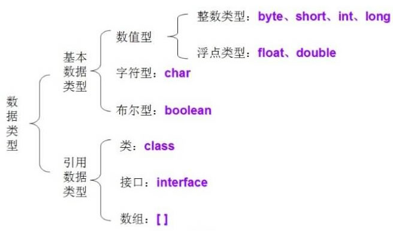
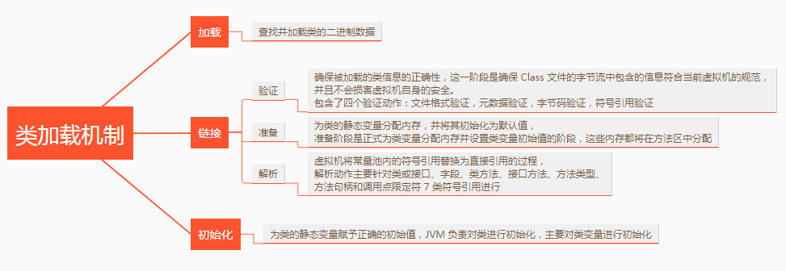
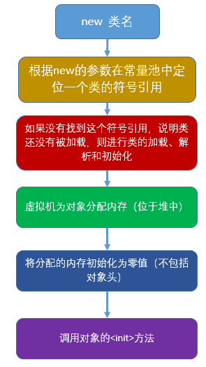
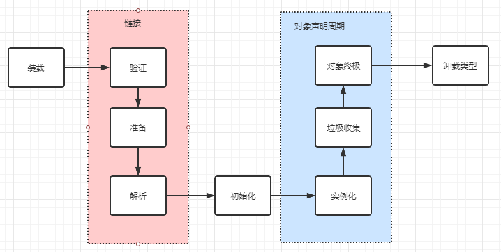
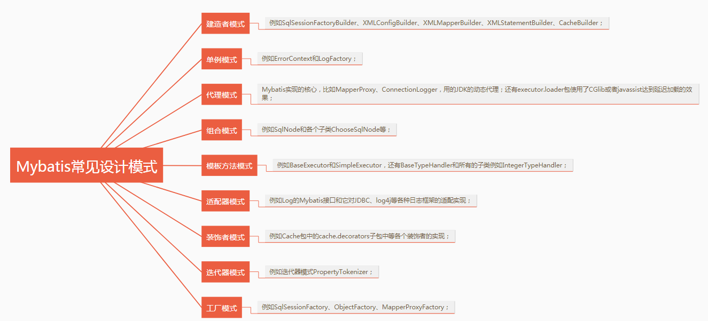

Java Basic
Last updated: Jun 27, 2024Table of Contents
- 0) Ref
- Java memoery model
- a++ VS ++a ?
- Java basic data type (基本數據類型) VS reference data type (引用數據類型) **** ?
- Java boxing (裝箱) VS unboxing (拆箱) ?
- String constant pool ?
- 成員變量 (member variable) VS 局部變量 (local variable) ?
- What static variable for ?
- static method VS instance method ?
- Overwrite VS overload ?
- Explain 多型 Polymorphism ?
- String VS StringBuffer VS StringBuilder ?
- Exception VS Error ?
- Java serialize, deserializes ?
- Java @transient explain ?
- try-with-resource VS try-catch-final ?
- Explain generic type ?
- Explain reflection ?
- Java IO flow ?
- Object common methods ?
- How many ways Java create a new instance ?s
- ArrayList VS LinkedList ?
- Why have ArrayList, consider we already have Array
- Hashtable VS HashMap
- HashMap VS ConcurrentHashMap
- Class(類)加載步驟
- New ㄧ個Class(類)步驟
- Class(類) 生命週期
- MyBatis 常見設計模式
- Throw vs throws
Java FAQ
0) Ref
- https://javaguide.cn/java/basis/java-basic-questions-01.html
- https://cloud.tencent.com/developer/article/2183300
- https://github.com/yennanliu/JavaHelloWorld/tree/main/doc/java_interview_guide_PDF-main
- https://javabetter.cn/sidebar/sanfene/javase.html#_25-final、finally、finalize-的区别
Java memoery model
a++ VS ++a ?
- a++ : assign a first, then do a += 1
- ++a : do a += 1 first, then assign value
// java
b = a++;
b = ++a;
Java basic data type (基本數據類型) VS reference data type (引用數據類型) **** ?

-
basic data type : byte, short, int, long, float, dobule, char, boolean …
-
reference data type : Class, interface, Array
-
Note :
-
basic data type :
- “==” : compare attr (value)
- equals : compare attr (value)
-
reference data type :
- “==” : compare storage address
- equals :
- NOT override : Still compare storage address (same as “==”)
- override : compare attr (value)
- all class are child class of Object class
-
Note : some reference class’ equals method already overriden (e.g. String), so its equals method already compare attr
// java public boolean equals(Object obj) { return (this == obj); }// java // new Class : use a new storage in heap (內存) String a = new String("123"); String b = new String("123"); System.out.println(a==b); // false ( "new" will use NEW address in internal storage) // without new : will fetch from constant pool String c = b; System.out.println(c==b); // true ( c will fetch from constant pool (常量池)) -
-
https://blog.csdn.net/weixin_45658089/article/details/120248191
-
https://javaguide.cn/java/basis/java-basic-questions-02.html#object-类的常见方法有哪些
Java boxing (裝箱) VS unboxing (拆箱) ?
- boxing : basic data type -> reference type
- unboxing : reference type -> basic data type
// java
Integer i = 1; // boxing
int n = i; // unboxing
String constant pool ?
- Avoid repeatedly create same String, for better performance
// java
// 在堆中创建字符串对象”ab“
// 将字符串对象”ab“的引用保存在字符串常量池中
String aa = "ab";
// 直接返回字符串常量池中字符串对象”ab“的引用
String bb = "ab";
System.out.println(aa==bb);// true
成員變量 (member variable) VS 局部變量 (local variable) ?
-
member variable
- belong to class
- storage
- with static : belong to class (heap)
- without static : belong to instance
- life
- exist when class exist
- has default value
-
local variable
- in code block or in method
- storage : belong to stack
- life
- deleted when method execution complete
- has NO default value
// java
public class VariableExample {
// 成员变量
private String name;
private int age;
// 方法中的局部变量
public void method() {
int num1 = 10; // 栈中分配的局部变量
String str = "Hello, world!"; // 栈中分配的局部变量
System.out.println(num1);
System.out.println(str);
}
// 带参数的方法中的局部变量
public void method2(int num2) {
int sum = num2 + 10; // 栈中分配的局部变量
System.out.println(sum);
}
// 构造方法中的局部变量
public VariableExample(String name, int age) {
this.name = name; // 对成员变量进行赋值
this.age = age; // 对成员变量进行赋值
int num3 = 20; // 栈中分配的局部变量
String str2 = "Hello, " + this.name + "!"; // 栈中分配的局部变量
System.out.println(num3);
System.out.println(str2);
}
}
What static variable for ?
static method VS instance method ?
Overwrite VS overload ?
覆寫(Override)是指子類別可以覆寫父類別的方法內容，使該方法擁有不同於父類別的行為。
多載(Overload)指在一個類別(class)中，定義多個名稱相同，但參數(Parameter)不同的方法(Method)。
-
https://medium.com/@c824751/override-覆寫-overload-多載-polymorphism-多型-的差異-3de1a499de29
-
https://matthung0807.blogspot.com/2018/02/java-overload.html
Explain 多型 Polymorphism ?
多型(Polymorphism)是指父類別可透過子類別衍伸成多種型態，而父類別為子類別的通用型態，再透過子類別可覆寫父類別的方法來達到多型的效果，也就是同樣的方法名稱會有多種行為。
String VS StringBuffer VS StringBuilder ?
-
String :
- unchangeable
- thread safety, constant
-
StringBuilder :
- parent class : AbstractStringBuilder
- thread unsafety
- use case : single thread
-
StringBuffer :
- parent class : AbstractStringBuilder
- thread safety (lock)
- use case : multi thread
Exception VS Error ?
Java serialize, deserializes ?
Java @transient explain ?
Variables may be marked transient to indicate that they are not part of the persistent state of an object. 我們都知道一個物件只要實現了Serilizable接口，這個物件就可以被序列化，java的這種序列化模式為開發者提供了很多便利，我們可以不必關係具體序列化的過程，只要這個類別實現了Serilizable 接口，這個類別的所有屬性和方法都會自動序列化。
然而在實際開發過程中，我們常常會遇到這樣的問題，這個類別的有些屬性需要序列化，而其他屬性不需要被序列化，打個比方，如果一個使用者有一些敏感資訊（如密碼，銀行 卡號等），為了安全起見，不希望在網路操作（主要涉及到序列化操作，本地序列化快取也適用）中被傳輸，這些資訊對應的變數就可以加上transient關鍵字。 換句話說，這個欄位的生命週期僅存於呼叫者的記憶體中而不會寫到磁碟裡持久化。
總之，java 的transient關鍵字為我們提供了便利，你只需要實現Serilizable接口，將不需要序列化的屬性前添加關鍵字transient，序列化對象的時候，這個屬性就不會序列化到指定的目的 地中。
try-with-resource VS try-catch-final ?
Explain generic type ?
Explain reflection ?
Java IO flow ?
Object common methods ?
How many ways Java create a new instance ?s
- new、反射、clone 拷貝、反序列化
- https://learn.lianglianglee.com/文章/面试最常被问的 Java 后端题.md
ArrayList VS LinkedList ?
ArrayList
- 優點：ArrayList 是實現了基於動態數組的資料結構，因為位址連續，一旦資料儲存好了，查詢操作效率會比較高（在記憶體裡是連著放的）。
- 缺點：因為位址連續，ArrayList 要移動數據，所以插入和刪除操作效率比較低。
LinkedList
- 優點：LinkedList 是基於鍊錶的資料結構，位址是任意的，所以在開闢記憶體空間的時候不需要等一個連續的位址。 對於新增和刪除操作，LinkedList 比較佔優勢。 LinkedList 適用於要頭尾操作或插入指定位置的場景。
- 缺點：因為 LinkedList 要移動指針，所以查詢操作效能比較低。
適用場景分析
- 當需要對資料進行對隨機存取的時候，選用 ArrayList。
- 當需要對資料進行多次增加刪除修改時，採用 LinkedList。
- 如果容量固定，且只會加入尾部，不會造成擴容，優先採用 ArrayList。
當然，在絕大數業務的場景下，使用 ArrayList 就夠了，但需要注意避免 ArrayList 的擴容，以及非順序的插入。
Why have ArrayList, consider we already have Array
- 我們常說的陣列是定死的數組，ArrayList 是動態數組
- 高並發的情況下，線程不安全。 多個執行緒同時操作 ArrayList，會引發不可預測的例外狀況或錯誤。
- ArrayList 實作了 Cloneable 接口，標識著它可以被複製。 注意：ArrayList 裡面的 clone() 複製其實是淺複製
Hashtable VS HashMap
-
都實作了 Map、Cloneable、Serializable（目前 JDK 版本 1.8）。
-
HashMap 繼承的是 AbstractMap，而 AbstractMap 也實作了 Map 介面
-
Hashtable 繼承 Dictionary。
-
Hashtable 中大部分 public 修飾普通方法都是 synchronized 欄位修飾的，是線程安全的
-
HashMap 是非線程安全的
-
Hashtable key, val 不能為null
-
HashMap key, val 可以為null
-
If need thread safety, can use
- ConcurrentHashMap
HashMap VS ConcurrentHashMap
- 都是 key-value 形式的儲存資料；
- HashMap 是線程不安全的
- ConcurrentHashMap 是 JUC 下的線程安全的；
- HashMap 底層資料結構是數組 + 鍊錶（JDK 1.8 之前）。 JDK 1.8 之後是陣列 + 鍊錶 + 紅黑樹。 當鍊錶中元素個數達到 8 的時候，鍊錶的查詢速度不如紅黑樹快，鍊錶會轉為紅黑樹，紅黑樹查詢速度快；
- HashMap 初始陣列大小為 16（預設），當出現擴容的時候，以 0.75 * 陣列大小的方式進行擴容；
- ConcurrentHashMap 在 JDK 1.8 之前是採用分段鎖定現實的 Segment + HashEntry，Segment 陣列大小預設是 16，2 的 n 次方；JDK 1.8 之後，採用 Node + CAS + Synchronized 來確保並發安全進行實作。
Class(類)加載步驟
- 載入、驗證、準備、解析、初始化

New ㄧ個Class(類)步驟
- 檢測類別是否已載入過
- 為對象分配記憶體
- 為分配的記憶體空間初始化為 0
- 對對象進行其他相關設置
- 執行 init 方法

Class(類) 生命週期

MyBatis 常見設計模式

Throw vs throws
- https://matthung0807.blogspot.com/2018/02/java-throw-throws.html
- https://javabetter.cn/sidebar/sanfene/javase.html#_40-异常的处理方式
// java
public String getUserName(int userId) throws SQLException { // 會將SQLException拋給caller（就是呼叫這個方法的程式）
String userName = userDao.getUserName(userId);
if(userName == null){
throw new SQLException(); // 拋出一個SQLException例外
}
}